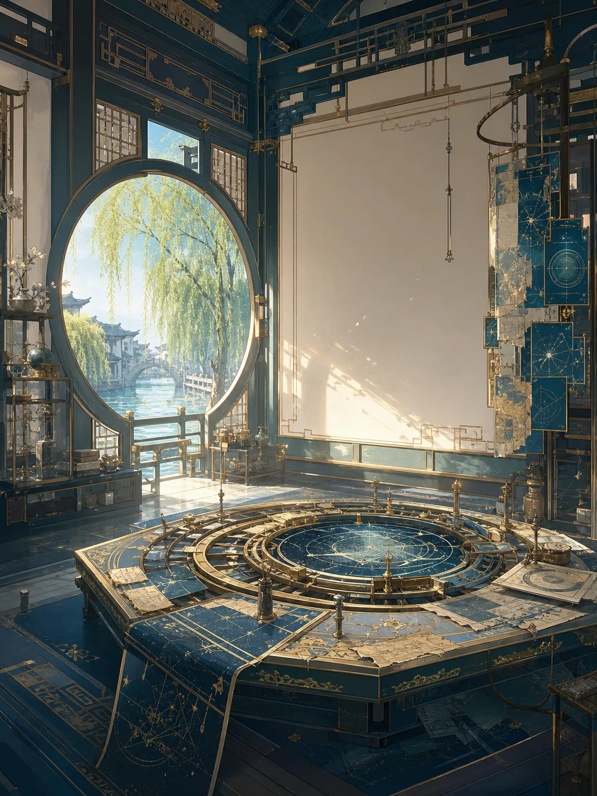
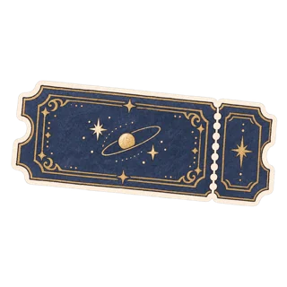
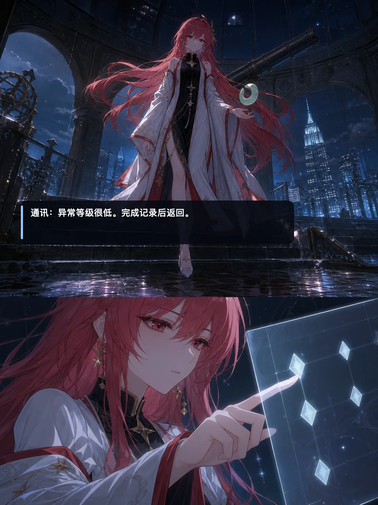
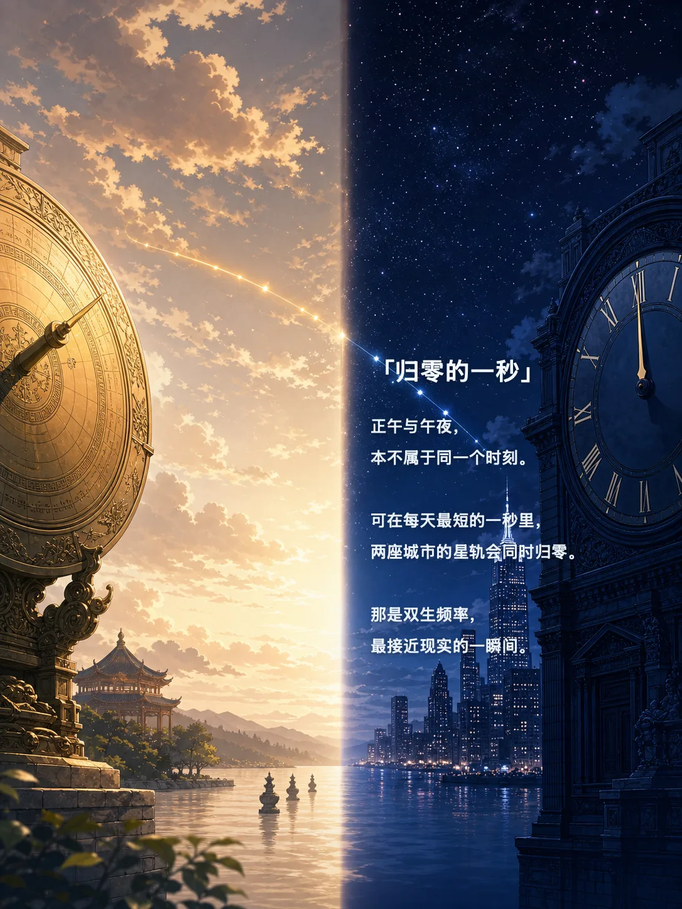
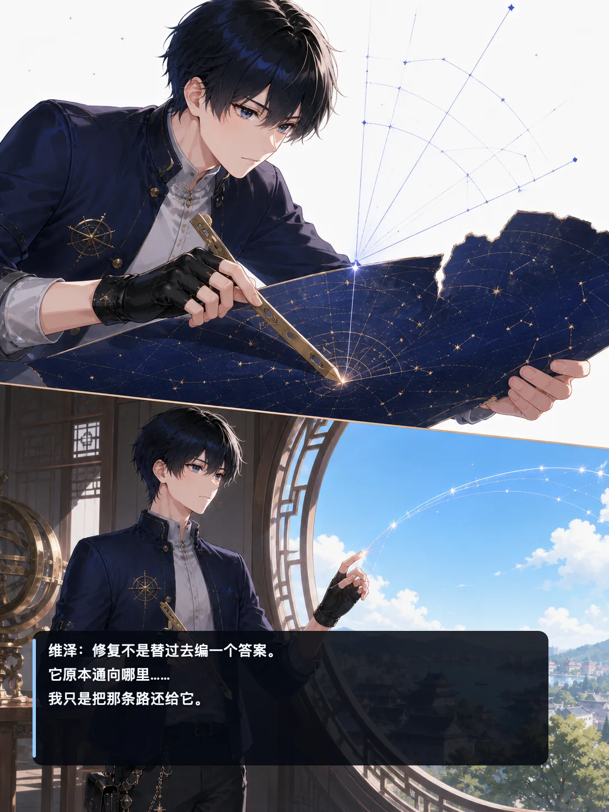
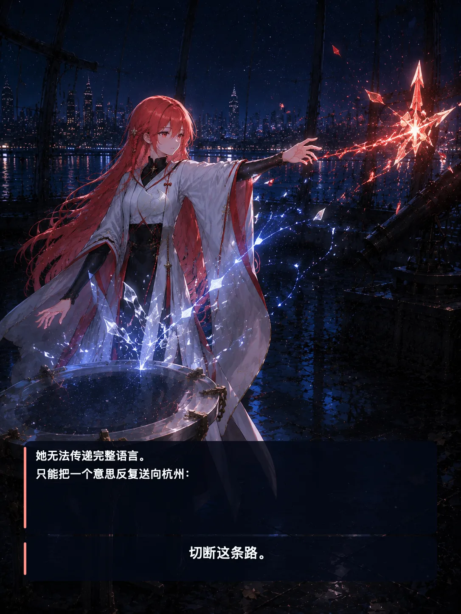
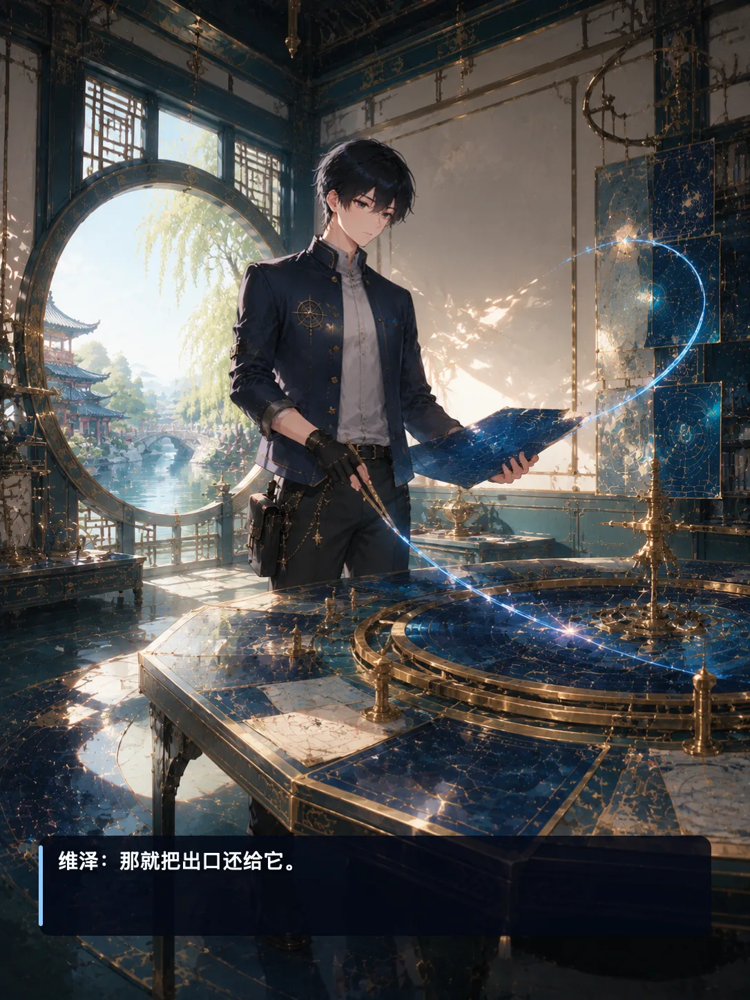
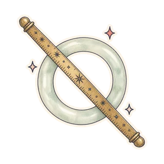

HANGZHOU · 11:47栖星馆
纸张纤维、旧黄铜与临水天光。维泽在这里修复一条本不该存在的线。



HANGZHOU · 11:47纸张纤维、旧黄铜与临水天光。维泽在这里修复一条本不该存在的线。
东河之下，冷夜与潮声重叠。雪柔把即将消失的真实，保存成一枚星晶。
它不预告未来，只记录生命独有的频率。
听见不是答案，主动回应才是道路的开始。
一条不属于既有序列、只能由两人共同完成的轨道。
正在载入故事。






“它不是被遗失了。是世界正在忘记，它曾经属于谁。”
“修复不是替过去编一个答案。我只是把那条路还给它。”